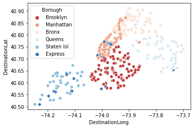
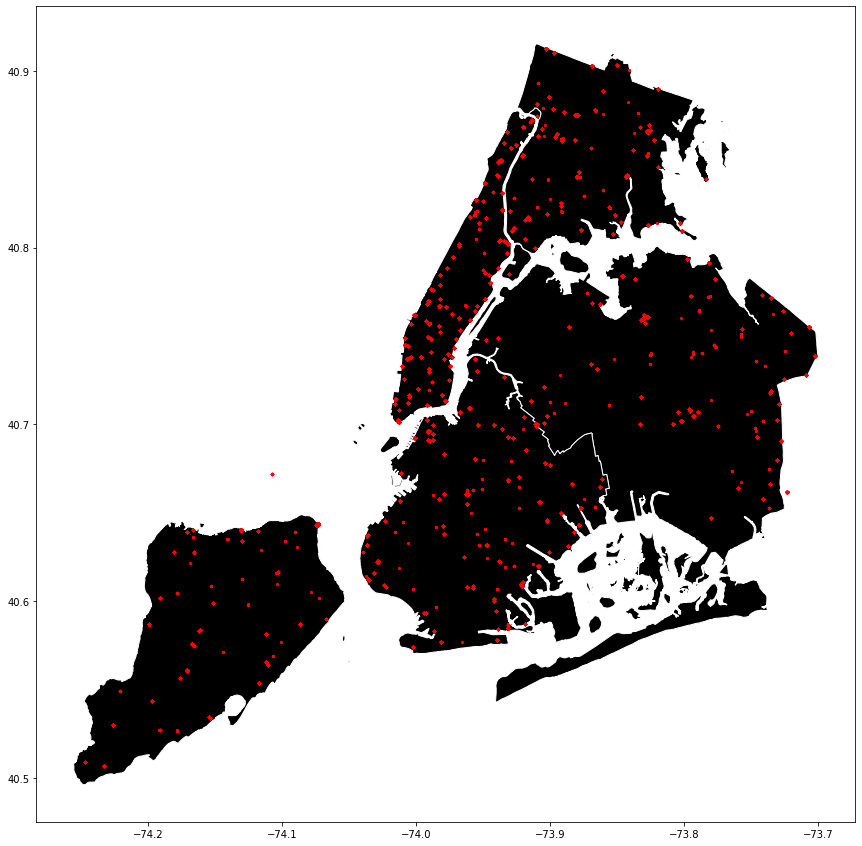
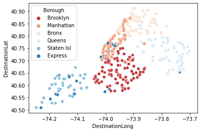
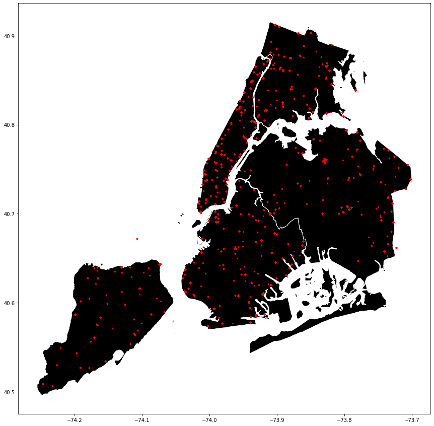

The projects that I have listed are 'Positivity Generator' and 'Bus Lines in NYC'
Positivity Generator
was a project during the first ever hackathon hosted by CUNY Brooklyn College (Hack Brooklyn).
As a team of 3, we implemented a Java program that generated either a compliment, advice, or a motivational quote depending on what the user wanted to generate. Individually, I created the simple graphical user interface (GUI) which consisted of buttons and a text field for output. This was my first ever hackathon that was hosted virtually because of the COVID-19 situation.
Bus Lines in NYC
was a project from my time during the Break Through Tech (formerly WiTNY) 2020 Winternship at Google.
During the winternship, I was put in a group of 2 to work on a database from Kaggle called Bus Lines in NYC. We conducted data analyses based on data sets and applied machine learning for predictions using Python. This was our first time learning and implementing Python in Google Collaboratory. We had also created visualization for bus routes and predicted buses based on the bus arrival and accuracy using matplotlib, seaborn, and geopandas.
 


